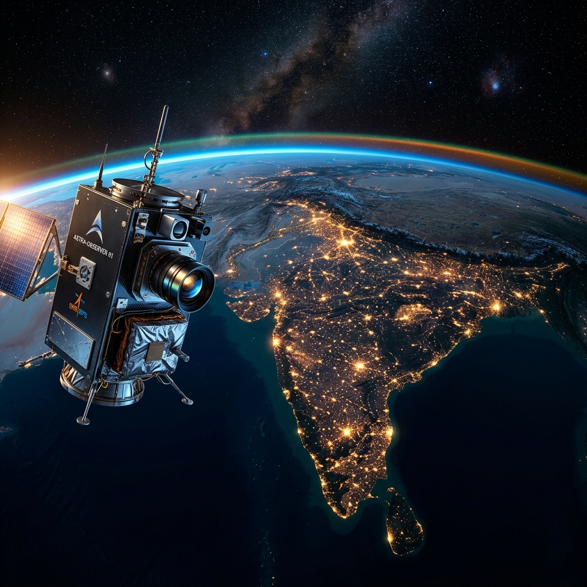

DESCEND
01 OVERVIEW
Jeyas C
Mechanical Engineer & GIS Expert
Kannur, Kerala
Online
Focus & Drive
A determined and curious individual with a strong sense of purpose, focused on blending space technology with real-world impact. Passionate about unlocking the secrets of the Earth from orbit.
Academic Pathway
Government College Of Engineering Kannur (GCEK)
B.Tech, Expected Graduation 2027
02 ACTIVE MISSIONS

Earth Intelligence
Working to extract vast amounts of actionable data using remote sensing arrays and convolutional neural networks.
Remote Sensing Intern
Zeta Space- Contributed to "Watchman": an Earth Intelligence Platform providing satellite-based insights.
- Involved in "Launchpad": advancing space education initiatives for students.
Secretary (EXECOM 2026-2027)
Calypso GCEK- Spearheaded outreach programs to promote science, technology, and space exploration on campus.
Workshop Lead
UL Space Club- Led the "Unlocking Earth" satellite data workshop at Cyberpark, Kozhikode.
- Taught students core concepts of Remote Sensing and GIS.
Project Contributor
Bharath Antariksh Hackathon- Developed a predictive model using CNN (Convolutional Neural Networks) for landslide detection.
03 SYSTEM CAPABILITIES
Space Tech
Aerospace Innovation
Observation
Remote Sensing & Data
GIS
Geographic Systems
CNN Models
Disaster Management
Operations
Management & Strategy
Leadership
Outreach & Education